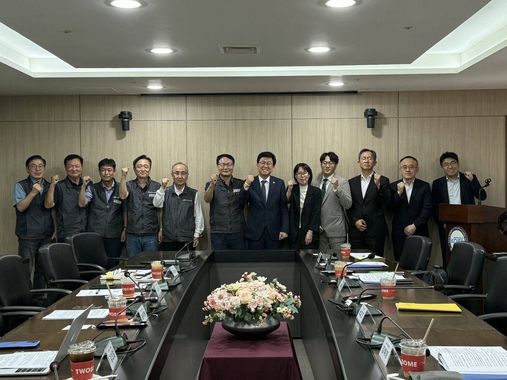
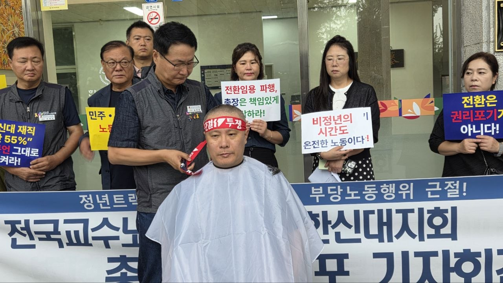
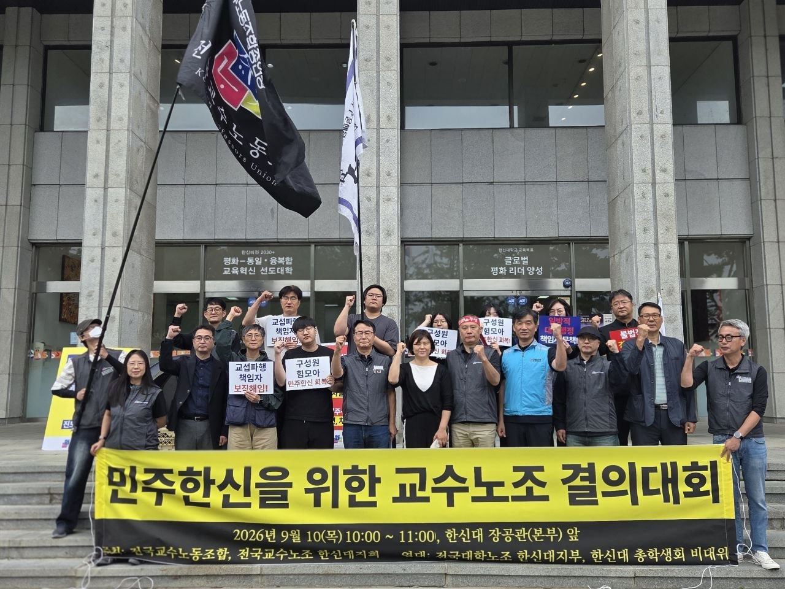
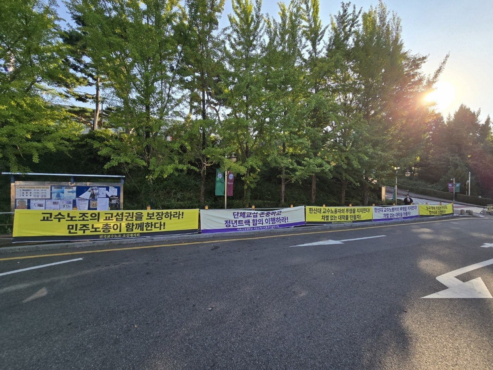
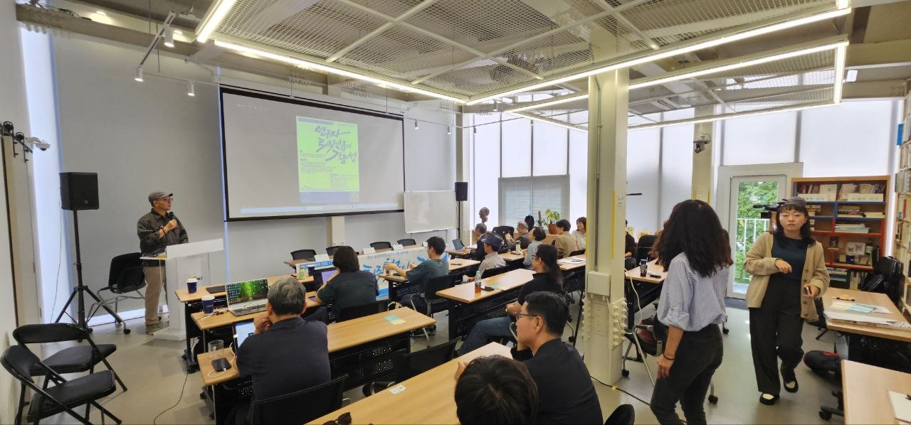

교수노조, 교육부 장관 정책간담회 개최… "비정년트랙 차별 해소·교권 보호 실효성 확보 약속"
송주명 위원장 5대 핵심 의제 전달… 교육부와 정책대화 창구 가동 합의
중앙교섭 요구 검토중, 대학 민주주의와 사학 공공성 강화를 향한 발걸음
전국교수노동조합(위원장 송주명)이 지난 9월 15일 오후 2시, 서울 여의도 한국교육시설안전원에서 최교진 교육부 장관과 정책간담회를 가졌다. 약 1시간 동안 진행된 이번 간담회에서 교수노조는 고등교육의 산적한 현안을 해결하고 대학 민주주의를 바로 세우기 위한 5대 의제를 강력히 제안했으며, 교육부로부터 전향적인 답변과 정책 추진 약속을 받아냈다.
고등교육 5대 핵심 의제 교육부장관 간담회
송주명 위원장은 현장 교수들의 절박한 목소리를 담아 다음의 다섯 가지 의제에 대한 교수노조의 입장을 엄중히 전달했다.
1고등교육 무상화 확대 및 고등교육교부금법 제정
2비정년트랙 전임교원 차별 해소 및 정년트랙 전환
3사립대학의 공공적 구조전환과 지역대학의 균형발전
4교원 신분보장 및 교권침해 문제 개선
5대학민주주의 확립과 사학 공공성 강화
주요 현안별 교육부 장관 답변 및 성과
1. 비정년트랙 교원 차별 해소를 위한 '정책대화 창구' 구축
송주명 위원장은 비정년트랙 전임교원의 임금·승진·재임용 등 심각한 차별 실태를 파악하기 위한 전국 단위 실태조사와 실질적 차별 해소 방안 마련, 그리고 지속적인 정책대화를 요청했다. 이에 최교진 교육부 장관은 비정년트랙 교원의 현실에 깊이 공감하며 "구체적인 실태조사를 추진하고 개선방안을 마련하기 위해 교수노조와 교육부 간 소통창구를 구축해 논의를 이어가겠다"고 밝혔다.
2. 사립대학의 '공공적 구조전환' 공동 정책연구 추진
현행 한계대학 퇴출 중심의 구조개선을 넘어, 건전한 사립대가 지역사회에서 공공적 역할을 이어갈 수 있도록 공동 정책연구를 제안했다. 교육부 장관은 "건강한 사립대를 살리는 것은 교육부의 고민이기도 하다"라며 대학구조개선위원회 제안 및 교수노조와의 공동 정책연구 추진을 긍정적으로 검토하겠다고 답변했다.
3. 교권침해 방지 및 교원소청 결정 이행력 강화
교원소청심사위원회 결정 이후에도 재단이나 대학이 유사한 불이익 처분을 반복하는 문제를 지적하고, 교육부 감사의 실효성 제고 및 실질적 제재방안 마련을 촉구했다. 교육부는 현행 이행강제금 제도의 효과를 점검하고 실태조사를 거쳐 실효성 있는 개선방안을 강구하겠다고 응답했다.
개별 대학 현안 대응 및 중앙교섭 추진 현황
개별 대학 현안 점검
웅지세무대학교의 설립자 자녀 부총장 선임 문제에 대해 교육부는 필요한 확인 절차를 진행 중이라고 밝혔으며, 김포대학교의 반복적 교권침해 및 교육환경·안전 문제에 대해서도 현장 점검을 추진하겠다는 입장을 밝혔다.
중앙교섭 본격화 기대
교수노조가 9월 5일 요청한 중앙교섭 건은 현재 교육부 대학정책과에서 절차를 검토 중으로, 조만간 구체적인 논의가 가시화될 전망이다.
이번 교육부 장관 간담회는 비정년트랙 교원 차별 해소, 교권 보호, 사립대 공공성 확보라는 시대적 과제를 교육 당국에 분명하게 각인시킨 성과를 거두었다. 전국교수노동조합은 단순한 약속에 그치지 않고 구체적인 정책과 제도 개선으로 이어질 수 있도록, 향후 진행될 실태조사와 정책협의, 중앙교섭 과정에 당당하고 치밀하게 대응할 방침이다.

대의원대회
전국교수노조 제35차 임시대의원대회… 규약 개정 및 투쟁기금 모금 의결
주요 규약 개정 내용
권리·의무 구체화 (제9조)
가입 90일 미만 또는 조합비 3회 미납 시 선거권을 제한한다. 정당한 사유 없이 3개월 이상 미납하면 권리를 정지한다.
지회 설립 요건 명시 (제24조)
조합원 10명 이상 또는 교원 대비 10% 이상 및 기본교육 이수 시 지회를 설립한다. 요건 미달 대학은 지역지회로 구성한다.
CMS 출금 절차 명확화 (제57조)
매월 21일 정기 출금, 29일 재출금을 진행하며 미납 시 최대 3개월분까지 소급 출금한다.
하반기 투쟁 계획
비정년트랙 차별 철폐를 위해 9월부터 11월까지 조합원 1인당 1만 원 이상의 특별기금을 모금한다.
1인 시위: 8~11월 청와대 앞 주 3회 순회 시위 진행
국회 토론회: 9월·11월 비정년트랙 문제 쟁점화 및 제도 개선 논의
전국교수대회: 11월 둘째 주 300명 규모 총력 투쟁 집회 개최
현장 대응 및 교섭 현황
웅지세무대(해고 손배소)와 김포대(면직 행정심판) 등 부당 징계·해고 사건에서 승소를 이끌어냈다. 신한대와 강릉영동대지회를 신설했으며, 한신대·대구대 등 주요 지회는 임·단협 교섭을 진행 중이다.
지회 소식
한신대지회, 비정년트랙 교원 정년트랙 전환 투쟁 1차 마무리
일방 삭감됐던 석·박사 경력 100% 회복 합의
최초 임용 전 경력 인정·연구년·승진연한 등은 추후 단체교섭에서 협의


우리 노동조합 한신대지회가 비정년트랙 전임교원의 정년트랙 전환 과정에서 발생한 갈등을 해결하기 위해 이어온 농성을 9월 14일 노사 합의 타결로 일단락지었다.
그동안 한신대지회는 동일한 업무를 수행함에도 2~3년 단위의 재임용 불안과 임금·수당·연구실 차별에 시달려온 비정년트랙 교원의 처우 개선을 요구해 왔다. 그 결과 지난 6월 23일 학교법인 한신학원 이사회에서 비정년트랙 교원 16명의 정년트랙 전환이 확정된 바 있다.
그러나 이후 세부 조건 협의 과정에서 학교 측이 석·박사 경력 인정 호봉을 55%로 일방 삭감하고, 기존 교육·연구 경력 불인정 및 연구년 자격 차별을 유지하면서 노사 간 갈등이 심화됐다. 이에 지회는 2학기 개강일인 9월 1일부터 총력투쟁을 선포하고 지회장의 삭발 및 사무국장의 단식농성에 돌입했다.
수차례 노사협의 끝에 9월 14일, 학교 측이 삭감했던 석·박사 경력을 100% 회복해 호봉에 반영하기로 합의함에 따라 지회는 천막 농성을 해제하고 1차 투쟁을 마무리했다. 지회는 교육·연구 경력 인정 등 남은 요구사항에 대해서도 향후 단체교섭을 통해 지속적으로 협의를 이어나갈 계획이다.

전국 지부·지회
현장 투쟁과 조직 확대 열기 고조… 전국 지부·지회 소식
전국교수노동조합 산하 지회가 신규 설립, 교섭 요구, 대학 당국의 부당 행위 저지 투쟁을 현장에서 적극 전개하고 있다.
신규 지회 설립 및 교섭 개시
신한대지회
9월 1일 학교법인에 지회 설립을 공식 통보하고, 추후 교섭요구 및 투쟁을 준비중에 있다.
서울불교대학원대지회
9월 1일 2026년도 단협 체결을 위한 단체교섭을 요구했다.
수원여대지회
8월 26일 임금교섭 상견례를 개최하며 협상의 첫발을 뗐다.
단체교섭 진행 및 성실교섭 촉구
유한대지회
교수연구실 일방 배정 시정과 성실교섭을 요구하며 9월 2일 제7차 교섭을 진행했다.
ICT폴리텍대
8월 31일 제7차 교섭을 열어 단체교섭 비교표에 따른 조항(1~17조 및 보류조항) 심의를 이어갔다.
한라대지회
8월 27일 강원지방노동위원회 간담회를 통해 학교 측의 교섭 의사를 확인한 뒤 9월 1일 교섭 정상화 공문을 발송했다. 이어 9월 2일 사측의 교섭요구사실 공고를 이끌어냈으며 3일 부당노동행위 구제신청을 취하했다.
계원예대지회
9월 2일 교섭절차 이행 및 성실교섭을 요구했다.
강동대지회
8월 26일 2026년도 임금교섭 창구단일화 실무회의를 제안했다.
독소조항 저지 및 대학 정상화 투쟁
한신대지회
독소조항이 담긴 계약서 서명을 강요하는 대학 측에 맞서 9월 1일 투쟁선포 기자회견을 열었으며, 현재 일방 삭감됐던 석박사 경력 100% 회복 합의를 도출해 투쟁이 마무리된 상황이다.
강릉영동대지회
9월 4일 교수노조·직원노조·학생 연대 비상대책위원회를 구성하고, 교육부 감사 결과의 철저한 이행과 대학 정상화를 촉구하는 성명을 발표했다.
김포대지회
9월 1일 집행부 간담회를 열고 지회 주요 현안 대응책을 점검했다.
연구자 안전망
"연구 노동자 노후 안전망 만든다"… 연구자공제회 1주년 토론회 개최

비전임·독립 연구자의 노후 소득 보장을 위한 법정 연구자공제회 설립과 연구자연금 도입 논의가 본격화됐다. 연구자공제회는 지난 11일 서울 마포구 노회찬의집 6411홀에서 창립 1주년 기념 토론회 <연구자 퇴직연금의 가능성>을 개최하고 구체적인 법제화 방안을 발표했다. 이번 토론회에는 전국교수노동조합, 한국비정규교수노동조합, 전국대학원생·비정규연구자노동조합지부 등 주요 학술·노동 단체들이 공동주최로 함께했다.
교수노조 "연구자 삶 지탱할 연대의 기틀 마련에 적극 함께할 것"
축사에 나선 송주명 전국교수노동조합 위원장은 연구자공제회가 지난 1년간 자립적 상호부조 체계를 구축해 온 노고를 격려했다. 송 위원장은 "연구 노동자가 스스로 삶을 지탱하는 물적 기틀을 마련하는 일은 매우 뜻깊다"며 "교수노조 역시 연구자연금 법제화와 법정 공제회 설립을 위한 연대 투쟁에 적극 동참하겠다"고 밝혔다.
연구 노동자가 스스로 삶을 지탱하는 물적 기틀을 마련하는 일은 매우 뜻깊다.
이어 진행된 라운드테이블에는 김명연 교수노조 상지대 지회장이 함께 참석해 대학 현장의 불안정 연구자들과의 연대 필요성을 피력했다. 김 지회장은 연구 노동자의 당당한 노동권 확보와 노후 안전망 구축을 위해 단위 사업장 및 지회 차원에서도 법정 공제회 추진에 적극 힘을 보태겠다고 전했다.
토론회 핵심 구상
1개인별 통합 계좌(CPF) 도입 — 강사, 프로젝트 연구원, 독립연구자 등 연구자 신분이 바뀌더라도 적립금과 가입 기간이 단절 없이 이관·승계되는 단일 계좌 체계를 채택한다.
2R&D 간접비 1% 재원 조성 — 국가연구개발비 간접비 1%를 공동 출연해 연간 400억 원 규모의 산업단위 공동근로복지기금을 조성하고, 정부 매칭 지원금을 결합한다.
33단계 입법 로드맵 — 강사 임용계약서 내 소정근로시간 명시 표준화(단기) → 일하는 사람 기본법 공제회 조항 반영(중기) → (가칭)연구자공제회법 단독 제정(중장기) 순으로 추진한다.
학술·노동계는 이번 토론회를 기점으로 비전임·독립 연구자의 고용 불안정을 해소하고 지속 가능한 연구 환경을 조성하기 위한 대정부·국회 입법 활동을 강화할 방침이다.